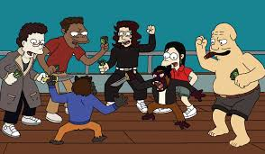
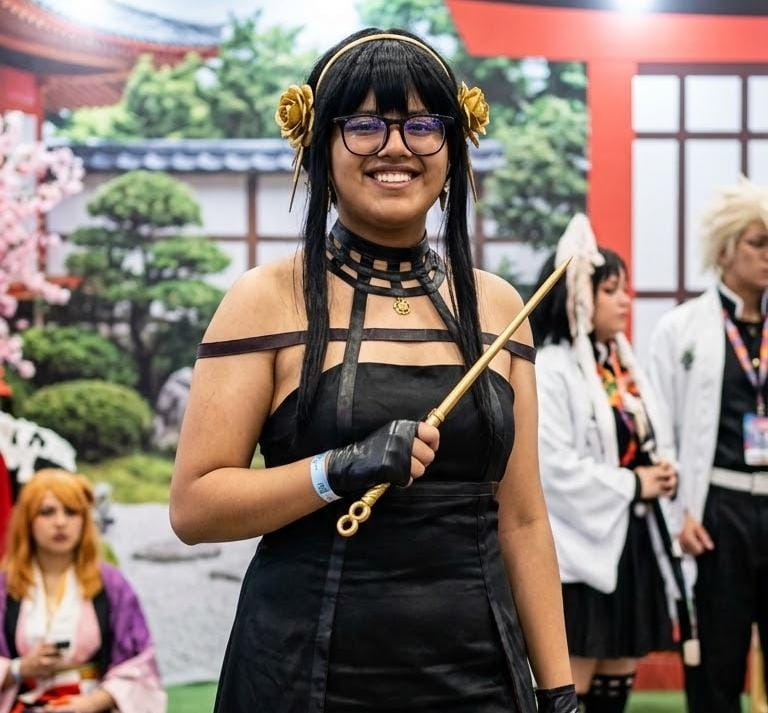
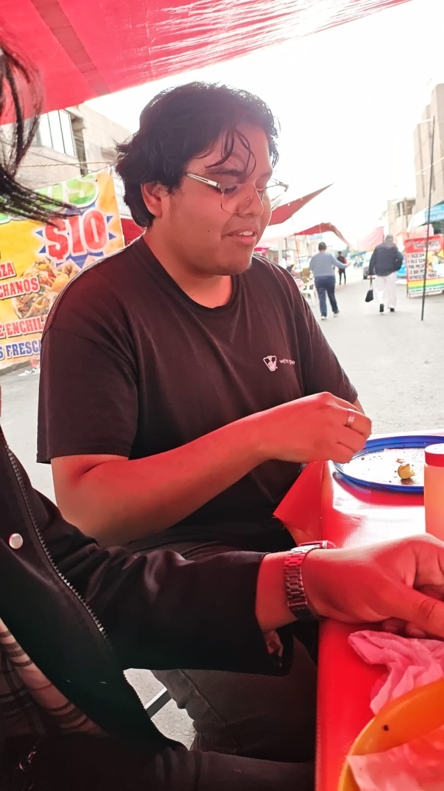
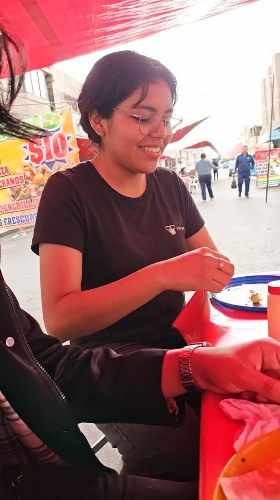
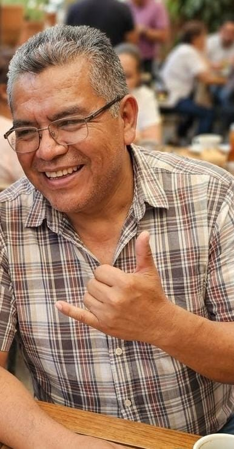
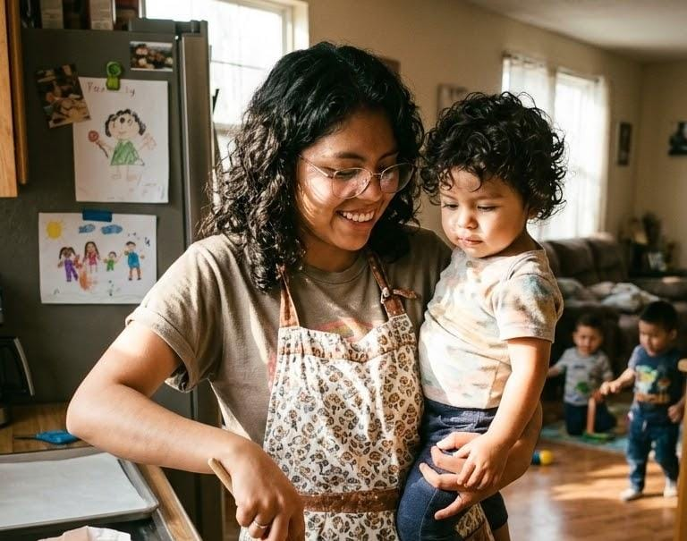
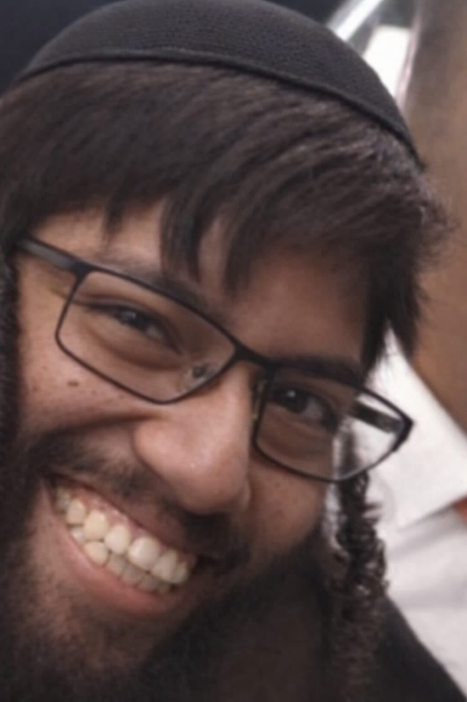

Gabriel Sánchez Cabrera es un hombre de estatura promedio, moreno y con lentes, de pocos conocidos. Si te lo topas, te puede morder la mano de lo poco que come en el día. Este hombre parece que tiene un albergue en su casa porque tiene de 6 a 7 gatos. Es buen pedo: cuando le caes bien, te puede hasta pichar unos tacos de 10 varos de su tío, que salió apenas del Reclusorio Norte. Lo pueden nombrar como "el depravado del oriente", y también lo pueden llamar músico porque sabe tocar muy bien... ah, y creo que también sabe tocar instrumentos. Si lo quieren tener de amigo en Roblos, les dejo su usuario: "B0lonialv".
Nota: Le gusta lamer patas

Sergio Sánchez Cabrera: este sujeto es hermano de leche de Gabriel. Para ser sincero, es bien codo, pues nunca quiere sacarse las Little Caesars. Eso sí, tengan cuidado: si algún día lo ven, corran, pues los desaparecerá con su enorme manguerón. De hecho, si piensan ir a la FES Zaragoza, lo verán tratando de seducir maestras centenarias, pues de lo que él más habla cuando lo veo es de su lema: «¿Para qué recoger las verdes si las maduras caen solas?». Y por último, si algún día le hablas y le caes bien, te puede llevar en el Sergio-móvil (un camión de basura). Su nombre de Roblos es "ElClovenxd".
Nota: Le va al America

Para ser sincero, casi no tengo información de la hermana de los sujetos anteriores. Lo poco que conozco es que ayuda a personas sin hogar; por esta razón a Gabriel no lo han corrido de la casa de sus papás. Creo que estudió Psicología y, para los que se lo preguntaban, solo le gustan güeros con ojos azules, ricos y de nacionalidad europea. Tan solo con mencionar lo de «güero», me troné a más de tres cuartas partes de todo el CCH
Nota: Es heroico en frifire

El papá de Gabriel es un señor que estudió en Harvard, pues él se tituló gracias a una beca. De hecho, entre Sergio y él mantienen una gran semejanza. Por qué no nombro a Gabriel como alguien a quien se deben de parecer tiene una explicación: Gabriel era un niño de la calle hasta que los papás de Sergio lo adoptaron y le dieron sus apellidos. Si se preguntan por qué no tengo foto del señor, es porque es un científico famoso que no deja que le tomemos fotos, por lo que habrá una imagen recreativa de él.
Nota:ledevo 10 baros

La mamá de Gabriel es la más comprensible y moralmente correcta de toda la familia. Se cree que hace donaciones a corporaciones benéficas como Perrón, Perrín para animales cojos. También nos ayudó a que la ajolotización se detuviera y no pasara a otros estados. Si algún día se preguntan por qué el mundo va mejor, es por la señora mamá de Gabriel. Y, al igual que el papá de Gabriel, no tengo fotos porque no necesita ser reconocida para seguir ayudando.
Nota:nose que poner aqui

Juan Roldán Páez no es parte de la familia de Gabriel, pero lo quise incluir porque es como la novia no oficial de Gabriel. De hecho, este sujeto es bien chistoso; incluso una vez me reí 56 5977 6562 veces con él. Si lo ven, solo no se enamoren tan rápido de él porque a un tal Porcayo le gusta, pero no le ha dicho nada,si lo quieren tener de amigo en el roblos su name es:"Thebearpro86".
Nota:nuca le pregunten que le paso un 30 de agosto del 2025